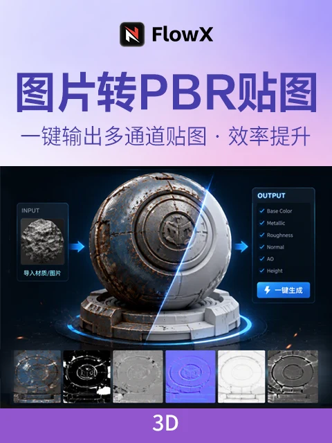

我发起并持续推进这个项目，参与产品设计、UI/UX、核心开发与AI 管线搭建，让制作团队积累的方法能够被更多业务同事使用。
AI CONTENT PRODUCTION
FlowX
面向美术、运营与导演，将制作工具、业务模板和 AI 能力整合到一个平台。选择管线提交素材，或通过 Agent 小奈描述需求，完成图像、动态内容与营销物料的制作。
STRUCTURE
一条需求，走完一条链路。
传统流程
- 提单
- 需求对接
- 排期
- 规范查找
- 设计制作
- 审核
- 修改
- 交付
每一步都要人工对接，经验留在个人手里。
FlowX
- 提交需求业务卡片 / Agent 小奈
- 选择管线业务专项 / 通用能力
- 制作模板与工具链执行
- 质检客观校验 + 美术评审
- 交付成品与素材包
异常回到修复与复核，制作方法沉淀成可复用管线。
WORKSPACE
精选AI管线案例
AGENT 小奈
也可以，直接说出需求。
提供参考素材，说明需要的内容与规格。小奈把需求与制作工具连接起来，在同一个会话里反馈过程、预览成品并提供下载。
- 01
提交需求
上传 KV，说明需要的弹窗、动态 GIF 与交付要求。
- 02
制作与预览
在会话中跟进制作，查看返回的静态与动态成品。
- 03
打包获取
确认结果，下载文件包，进入后续使用与验收。
业务提供目标与素材，小奈理解需求并组织工具执行；模板和处理工具承担规格适配，最终使用与视觉效果由人确认。
OUTPUT / MARKETING
一组素材，多种投放规格。
同一活动需要竖版、方形与横版物料，也需要不同视觉方向。以下选自买量营销的 110 张交付文件，展示其中两套方向的规格适配。
交付样例节选 · 点击图片查看大图
OUTPUT / SERIES
把系列物料一起做完。
围绕同一活动主题，组织人物、姓名与版式信息，生成系列宣发图。这里展示海报机闭环测试中的主 KV 与六张嘉宾图，观察系列的一致性与人物变化。
WORKFLOW / 3D
从网页，接到三维制作。
贴图工作台生成与预览材质，配套插件将贴图送入 Blender 或 C4D / Octane，创建材质并连接通道。选中对象时可直接赋予材质，减少下载、找文件与逐项接线。

TOOLBOX
覆盖制作中的不同环节。
- 人物与图像
- AI 定妆照、图像生成与加工
- 营销与批量物料
- 资源位、模板替换、系列海报
- 动态内容
- GIF 生成、视频转 GIF、大屏批量制作
- 素材加工
- 图片压缩、组件提取与规格适配
- 三维工具衔接
- PBR 贴图、材质预览与 DCC 导入
IN USE
进入实际业务，持续迭代。
从单次制作到重复调用，平台服务于多款游戏的内容生产，让已有流程与工具在后续需求中继续使用。
- 55+
- AI 管线
- 58
- 覆盖游戏
- 54,986
- 累计调用
- 54.3%
- 渠道单素材成本下降
数据统计截至 2026.11。